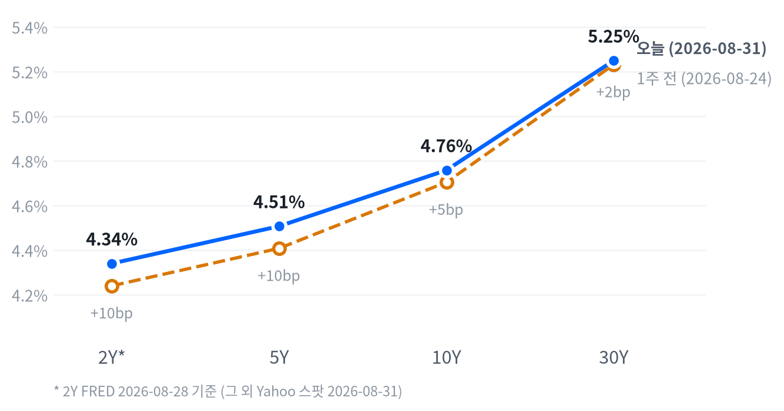

미군의 호르무즈 해협 타격과 이란의 보복 공습 소식에 뉴욕 3대 지수가 일제히 밀렸습니다. 다우가 -0.70%로 가장 크게 내렸고 나스닥은 -0.12%로 선방했습니다.
장기금리는 워시 의장의 매파 발언 여진 속에 실질금리 주도로 다시 올라 30년물이 5.249%를 기록했습니다. 유가는 WTI 기준 3.55% 급등했고 금도 안전자산 수요에 소폭 올랐습니다.
일요일 밤 미군이 호르무즈 해협의 이란 로켓 발사대를 타격하고 이란이 요르단 내 미군기지에 보복하면서, 뉴욕 증시는 개장부터 밀렸습니다. 다우가 -0.70%(374포인트) 내리며 3대 지수 중 가장 크게 빠졌고, 유가는 리스크 프리미엄을 반영하며 급등했습니다.
장기금리는 실질금리 주도로 밀려 올라 성장주 밸류에이션에 부담을 주는 경로로 이어지고, 유가 급등은 인플레이션 기대를 다시 자극할 수 있는 재료입니다. 메모리 업종은 지정학 이슈와 별개로 최근 급등한 D램 가격에 대한 차익실현이 겹쳐 이틀째 조정을 받고 있습니다.
포지션은 다음 세션까지 유지합니다. 일곱 자산군 등급을 2~6주 시계에서 그대로 가져가며, 지정학 리스크가 하루짜리 이벤트인지는 이번 주 브로드컴 실적과 금요일 8월 고용보고서로 확인해 나갈 계획입니다.
이번 판단을 뒤집을 조건은 호르무즈 해협 통항이 실제로 막히거나, 브렌트가 3개월 평균 90달러를 웃도는 흐름으로 굳어지는 경우입니다. 그 전까지는 이번 지정학 리스크를 하루짜리 이벤트로 봅니다.
| 지수 | 종가 | 등락률 | 기준일 |
|---|---|---|---|
| 닛케이 | 66,405.56 | +0.41% | 2026-08-28 |
| 항셍 | 25,584.79 | +0.07% | 2026-08-28 |
| 상해종합 | 3,952.18 | -0.11% | 2026-08-28 |
| DAX | 26,569.99 | +0.77% | 2026-08-28 |
| FTSE100 | 10,824.30 | +0.29% | 2026-08-28 |
| 유로스톡스50 | 6,485.67 | +0.95% | 2026-08-28 |
| VIX | 14.92 | +3.40% | 2026-08-31 |
아시아 증시는 미국과 방향이 엇갈렸습니다. 상하이종합은 -0.11%로 밀렸지만 닛케이(+0.41%)·항셍(+0.07%)은 올라 지역 안에서도 갈렸습니다. 유럽 역시 미국과 엇갈렸습니다. DAX(+0.77%)·FTSE(+0.29%)·유로스톡스(+0.95%)가 모두 올라 지역 안에서는 방향이 일치했죠.
선물은 이날 새벽 리스크 회피 흐름 속에서 상단을 확인한 뒤 밀렸습니다. S&P500 선물은 04:00 ET 7,719선에서 고점을 찍은 뒤 22:30 ET 7,684선까지 밀려 낙폭이 0.45%에 달했습니다.
나스닥 선물도 04:00 ET 29,535선에서 20:00 ET 29,274선까지 밀리며 0.89% 레인지를 그렸습니다. 정규장은 갭다운으로 출발해 S&P500·나스닥이 나란히 -0.18%, 러셀2000은 -0.17% 낮은 가격에 첫 거래를 맞았습니다.
장중 흐름은 낙폭을 되돌리는 쪽으로 흘렀습니다. 나스닥은 당일 레인지의 80퍼센타일 지점에서 마감해 상단에 가깝게 낙폭을 되돌렸고, S&P500(59퍼센타일)·러셀2000(53퍼센타일)은 중간권에서 마쳤습니다. 세 지수 모두 '중단 마감' 구간에 들었다는 것은 개장 초반의 매도가 장 후반까지 이어지지 않았다는 뜻이고, 저가 매수가 어느 정도 들어왔음을 보여줍니다.
이 구간 경계(중단 마감 안쪽인 고점권 84.6 이상·저점권 25.0 이하)는 최근 2,253거래일 종가 위치 분포에서 다시 잰 값입니다.
오늘 하루를 지배한 것은 지정학 리스크였습니다. 미국의 이란 로켓 발사대 타격과 이란의 요르단 내 미군기지 보복 공격 소식이 유가와 금리를 동시에 밀어 올렸고, 그 되돌림이 장 후반 낙폭 축소로 이어졌습니다. 시간외에서는 정규장 흐름을 뒤집을 만한 추가 재료가 없었습니다.
자산 10종 전체를 관통한 공통 움직임 가운데 43%가량은 주식군이, 그다음 20%가량은 금리군이 설명했습니다. 지난 구간과 마찬가지로 주식이 여전히 시장을 끄는 가장 큰 힘이었다는 뜻이고, 개별 재료보다 지수 전체의 방향이 하루를 좌우했다고 볼 수 있습니다.
오늘 조정은 크지 않았습니다. S&P500은 평소 하루 변동폭의 0.4배만 움직여 잔물결 수준이었고, 나스닥은 그보다도 작은 0.1배에 그쳤습니다. 그럼에도 S&P500은 최근 504거래일 중 97.2퍼센타일 자리를 지키고 있습니다. 나스닥도 95.4퍼센타일의 고지를 지키고 있어, 최근 두 달간 이어진 강세 자체가 흔들린 것은 아니죠.
| 지수 | 종가 | 등락률 |
|---|---|---|
| 나스닥 | 26,370.89 | -0.12% |
| S&P500 Growth | 139.60 | -0.30% |
| S&P500 Value | 236.53 | -0.32% |
| S&P500 | 7,686.14 | -0.33% |
| 러셀2000 | 2,956.45 | -0.54% |
| 다우 | 53,185.90 | -0.70% |
| 섹터 | 종가 | 등락률 |
|---|---|---|
| 에너지 | 63.96 | +2.04% |
| 기술 | 186.50 | +0.44% |
| 헬스케어 | 170.54 | -0.36% |
| 임의소비재 | 116.59 | -0.53% |
| 필수소비재 | 84.98 | -0.55% |
| 금융 | 57.71 | -0.67% |
| 부동산 | 44.11 | -0.83% |
| 소재 | 52.69 | -0.92% |
| 산업재 | 175.13 | -1.13% |
| 유틸리티 | 42.23 | -1.17% |
| 통신서비스 | 111.46 | -1.35% |
나스닥은 개장 후 10:00 ET 시가 대비 -0.40%까지 밀리며 저점을 찍었습니다. 이후 낙폭을 되돌려 15:30 ET 시가 대비 +0.17%까지 오르며 고점을 찍고 그 부근에서 마감했습니다.
S&P500과 러셀2000은 개장 직후인 09:30 ET가 고점(시가 수준)이었고, 이후 낙폭을 키워 각각 10:00 ET(-0.42%)와 13:30 ET(-0.78%)에 저점을 찍은 뒤 소폭 반등해 마쳤습니다.
개별 종목 중에서는 엔비디아가 장중 -1.21%까지 밀렸다가 장 후반 +1.11%까지 오르며 지수보다 훨씬 큰 진폭을 그렸습니다.
전략 해석오늘 S&P500이 -0.33% 내리는 동안 통신서비스가 -0.20%p로 지수 하락에 가장 크게 기여했고, 기술은 홀로 +0.15%p를 보태며 낙폭을 줄였습니다. 금융·산업재·임의소비재도 각각 -0.07%p씩 끌어내렸고, 에너지는 +0.04%p로 두 번째 플러스 기여였습니다. 이 아홉 섹터로 설명되지 않는 부분은 0.03%p에 그쳐, 오늘 하락은 개별 섹터 움직임으로 대부분 설명됩니다.
나스닥이 낙폭 대부분을 되돌리며 상단권에서 마감한 것은 저가 매수가 들어왔다는 신호로 볼 수 있지만, 하루짜리 되돌림이지 추세 전환을 확인해 주는 것은 아닙니다. 금리와 주가의 최근 60거래일 상관은 -0.33으로 여전히 반대 방향이지만 그 강도는 직전 구간(-0.70)보다 옅어져, 금리 상승이 주가에 주는 부담이 예전만큼 기계적이지는 않습니다.
다음 시험대는 이번 주 브로드컴 실적과 금요일 8월 고용보고서입니다. 다음 금리 발작이 오늘만큼 매끄럽게 되돌려질지가 관건입니다.
러셀2000이 -0.54%로 S&P500(-0.33%)·나스닥(-0.12%)보다 더 크게 밀린 것도 눈여겨볼 대목입니다(다우는 -0.70%로 더 컸습니다). 금리가 튀는 날 조달 비용에 민감한 소형주가 먼저 반응하는 것은 낯선 패턴이 아니고, 성장주(-0.30%)와 가치주(-0.32%)의 낙폭 차이가 크지 않았던 것과 대비됩니다.
스타일보다는 시가총액 크기가 오늘 하루의 순환매를 더 잘 설명하는 축이었던 셈입니다. 러셀2000은 20일 이동평균 대비로도 -2.07%에 그쳐 대형주보다 훼손이 뚜렷했고, 지정학 리스크가 길어질수록 이 격차가 더 벌어질 수 있어 소형주 비중은 당분간 보수적으로 접근하는 편이 낫다고 봅니다.
반대로 대형 기술주는 오늘도 지수 대비 견조해, 지정학 리스크가 조정을 만들 때 오히려 상대적으로 안전한 자리로 인식되는 흐름이 이어지고 있습니다.
10년물은 4.758%로 최근 504거래일 가운데 99.4퍼센타일에 자리하고 있습니다. 30년물도 5.249%로 99.0퍼센타일에 있어, 두 만기 모두 최근 2년 중 가장 높은 구간에서 벗어나지 못했습니다. 오늘 상승폭 자체는 10년물이 평소 하루 변동폭의 1.0배 안팎으로 보통 수준이었지만, 이미 고점권에 오래 머문 채 또 오른 것이라는 점이 부담입니다.
| 만기 | 종가(2026-08-31) | 전일比(bp) | 1주 전 | 주간 변화(bp) |
|---|---|---|---|---|
| 2Y* | 4.34% | +14.0bp | 4.24% | +10.0bp |
| 5Y | 4.507% | +2.6bp | 4.408% | +9.9bp |
| 10Y | 4.758% | +3.8bp | 4.704% | +5.4bp |
| 30Y | 5.249% | +4.3bp | 5.231% | +1.8bp |

지난 한 주간 전 구간 금리가 함께 올랐습니다. 5년물이 +9.9bp로 가장 크게 뛰었고 30년물은 +1.8bp에 그쳐, 단기 구간이 장기 구간보다 더 밀려 오른 약세 속 커브 눌림(베어 플래트닝에 가까운 흐름)으로 볼 수 있습니다. 다만 2년물의 변화(+10.0bp)는 FRED 기준일이 다른 구간이라 같은 잣대로 단정하기는 어렵습니다.
표에 찍힌 2s10s 스프레드는 41.8bp인데, 2년물(FRED, 08-28)과 10년물(야후, 08-31)의 기준일이 다른 값입니다. 두 다리를 같은 날짜(FRED 동일자)로 맞추면 39.0bp로, 날짜 불일치가 만든 차이는 약 2.8bp입니다. 당일 기준으로만 커브 형태를 보려면 5년물·30년물이 모두 야후 동일자인 5s30s 스프레드 74.2bp가 더 적절합니다.
왜 금리가 움직였나국채 금리는 실질금리와 기대인플레로 나뉩니다. FRED 동일자(2026-08-28) 기준으로 10년물의 하루 변화 6bp 가운데 8bp가 실질금리에서, -2bp가 기대인플레이션에서 왔습니다. 5년물도 하루 변화 10bp 중 11bp가 실질금리 몫이었죠. 물가 기대가 아니라 정책금리 기대(실질 할인율)가 다시 올라간 결과이며, 워시 의장의 매파적 잭슨홀 발언과 맞물립니다.
10년물 기간프리미엄(만기가 길수록 더 얹어 받는 값)은 8월 21일 기준 0.87%로 하루 2bp, 한 주간 2.9bp 올랐습니다. 실질금리와 기간프리미엄이 함께 오른 것은 성장 기대보다 국채 수급·불확실성 프리미엄 쪽에 무게를 싣는 신호로 볼 수 있습니다.
신용시장은 오히려 진정됐습니다. 하이일드 스프레드는 2.60%로 하루 -3bp·주간 -10bp 좁혀졌고 투자등급 스프레드도 0.79%로 안정적이어서, 이번 금리 조정이 신용 스트레스로 번지는 신호는 아직 없습니다.
5년 후 5년 기대인플레(먼 미래 구간만 떼어 본 기대치)는 명목 4.98%, 실질 2.66%입니다(2026-08-28 기준). 하루 전보다 2bp 올랐고, 두 다리를 더한 내재 기대인플레는 2.32%로 여전히 낮아 장기 인플레 기대 자체는 잘 붙들려 있다고 볼 수 있습니다.
듀레이션 전략30년물이 근래 최고 수준인 5.249%에서 벗어나지 못하는 한, 장기물을 서둘러 늘릴 자리는 아닙니다. 이 레벨이 뚫리는지가 다음 국면을 가르는 분기점이고, 그때까지는 만기가 짧은 구간 중심으로 대응하는 편이 낫다고 봅니다. 실질금리가 이번 상승을 주도했다는 점도 이 판단을 지지하죠. 실질금리 주도 상승은 기간프리미엄·수급 요인이 걷히기 전까지 되돌리기 어려운 경우가 많아서, 기대인플레이션이 주도한 상승보다 장기물 매수에 더 신중해야 합니다.
달러지수(DXY)는 99.41로 최근 2년 밴드의 딱 중간(46.4퍼센타일)에 머물러 있어 추세랄 것이 없는 자리입니다. 반면 엔은 달러당 159.80엔대로 90.9퍼센타일에 해당하는 약세권에, 원화는 1,368원대로 8.5퍼센타일의 강세권에 있어 통화별로 위치가 크게 갈립니다. 오늘 DXY는 평소 하루 폭의 1배 안팎으로 움직여 특별히 큰 하루는 아니었습니다.
| 통화 | 종가 | 등락률 |
|---|---|---|
| DXY | 99.413 | -0.29% |
| USD/KRW | 1,368.12 | -0.89% |
| USD/JPY | 159.798 | +0.30% |
| EUR/USD | 1.1617 | -0.34% |
오늘 달러 약세는 위험회피 심리와는 결이 다릅니다. 통상 지정학 리스크가 불거지면 안전자산으로 달러도 함께 강세를 보이는 경우가 많지만, 오늘은 그 안전자산 수요가 금과 국채 쪽으로 쏠리면서 DXY는 오히려 소폭 밀렸습니다. 최근 60거래일 기준 주식과 달러의 상관은 -0.33으로 여전히 반대로 움직이는 경향이 남아 있는데, 오늘은 주식과 달러가 함께 내려 그 패턴에서 벗어난 하루였습니다.
장중 흐름엔/달러는 자정 무렵 160.20엔에서 출발해 오전 9시 ET 159.47엔까지 밀렸다가(엔화 강세) 장 후반 159.72엔으로 되돌리며 마감했습니다.
원화는 오늘 -0.89%로 오늘 움직인 자산 중 상대적으로 큰 편에 속했습니다. 원/달러가 8.5퍼센타일이라는 극단적인 강세권에 있는 채로 추가로 더 강해진 것이어서, 달러 전반의 약세보다는 원화 자체의 개별 수급이 더 크게 실린 하루로 보입니다.
유로/달러는 -0.34% 내려 달러가 유로 대비로는 오히려 강했다는 뜻인데, 이는 DXY 전체가 소폭 밀린 것과는 반대 방향입니다. 유로만 놓고 보면 다른 통화보다 약했던 하루로, 달러지수의 방향과 곧바로 겹쳐 읽기는 어렵습니다.
결국 오늘 DXY의 하락은 유로가 아니라 엔·원 등 다른 구성 통화들의 상대적 약세 되돌림이 더 크게 반영된 결과로 볼 수 있습니다.
WTI는 86.36달러로 최근 2년 중 85.9퍼센타일의 높은 자리에 있습니다. 금도 4,496달러로 80.6퍼센타일의 상단권에 있습니다. 오늘 유가는 평소 하루 폭의 1.1배로 그럭저럭 큰 편이었지만, 금은 0.24배에 그쳐 사실상 잔잔했습니다.
| 품목 | 종가 | 등락률 |
|---|---|---|
| WTI | $86.36 | +3.55% |
| Brent | $88.64 | -0.75% |
| 천연가스 | $2.933 | +1.56% |
| 금 | $4,495.60 | +0.39% |
이번 유가 급등은 수요보다 공급 리스크입니다. 일요일 밤 미군이 호르무즈 해협의 이란 로켓 발사대를 타격했고 이란이 요르단 내 미군기지에 보복하면서, 원유 공급 차질 우려가 반영됐습니다. 브렌트는 오히려 -0.75%로 내려 WTI와 반대 방향을 그렸는데, WTI(86.36달러)가 브렌트(88.64달러)보다 여전히 낮지만 그 격차는 좁혀졌죠. 이는 호르무즈발 리스크가 미국 인근 벤치마크에 더 직접 반영된 결과로 보이며, 계약월 차이도 일부 작용했을 수 있습니다.
통상 금은 실질금리와 반대로 움직인다고 하지만, 최근 60거래일 상관은 -0.09로 사실상 무관한 수준까지 옅어졌습니다(직전 60거래일은 -0.47). 그래서 오늘처럼 금리가 오르는 와중에도 금이 함께 오른 것이 특별히 이례적이지는 않습니다. 금은 안전자산 수요와 달러 약세가 동시에 받쳐 준 것으로 볼 수 있습니다.
천연가스는 +1.56%로 원자재 중 유가 다음으로 크게 움직였습니다. 같은 지정학 리스크라도 원유만큼 직접적인 공급 경로는 아니지만, 에너지 전반에 리스크 프리미엄이 얹힌 하루였다는 점에서 방향은 같았습니다. WTI는 최근 20거래일 기준으로도 +7.51% 올라 있어, 오늘의 급등이 완전히 새로운 흐름이라기보다는 이미 진행 중이던 상승 추세 위에 지정학 재료가 더해진 쪽에 가깝습니다.
장중 흐름WTI는 새벽 3시 ET 시가 대비 -0.76%까지 밀리며 저점을 찍은 뒤 오전 6시 ET +1.96%까지 오르며 고점을 형성했고, 이후 등락을 거쳐 마감했습니다.
금은 자정 무렵 시가 대비 -0.22%까지 밀렸다가 오전 7시 ET +0.95%까지 오르며 고점을 찍었고, 이후 소폭 반락해 마감했습니다.
국면은 냉각을 나흘째 유지합니다. 성장축 점수는 -0.341로 둔화 경계 아래에 그대로 머물러 있고, 물가축 점수도 -0.391로 교착과 둔화 사이 경계에 걸쳐 있습니다. 오늘은 새로 반영할 지표 발표가 없어 두 점수 모두 어제와 같고, 국면을 움직일 근거도 없습니다.
이 판단을 다시 열 조건은 신규 지표 발표입니다. 특히 물가축이 둔화 경계 아래로 확실히 내려가는 지표가 나오면 연착륙 쪽으로, 성장축이 반등하는 지표가 나오면 교착 쪽으로 이동할 수 있습니다.
고용은 어제와 같이 보합권입니다. 새로 반영할 발표가 없어 판정도 그대로입니다. 고용축 +0.184
| 지표 | Actual | Forecast | Previous | 발표일 | 추세 |
|---|---|---|---|---|---|
| 구인건수(JOLTS) | 7,359천 건 | — | 7,537천 건 | 기준월 6월 | 개선(완만) |
| 신규 실업수당 청구 | 20.3만 건 | ~20.8만 건 | 20.7만 건 | 2026-08-27 | 보합(미미) |
| 신규 청구 4주 평균 | 20.55만 건 | — | 20.425만 건 | 2026-08-27 | 개선(뚜렷) |
| 계속 실업수당 청구 | 177.8만 건 | — | 179.6만 건 | 2026-08-27 | 개선(미미) |
| 비농업 고용 증감 | -2.3만 명 | — | +2.0만 명 | 기준월 7월 | 악화(완만) |
| 실업률 | 4.1% | — | 4.2% | 기준월 7월 | 개선(미미) |
| 시간당 임금(전월비) | +0.05% | — | +0.29% | 기준월 7월 | 악화(완만) |
생산·활동도 어제와 같이 악화 쪽입니다. 생산·활동축 -0.362
| 지표 | Actual | Forecast | Previous | 발표일 | 추세 |
|---|---|---|---|---|---|
| 산업생산(전월비) | +0.20% | — | +0.27% | 기준월 7월 | 악화(완만) |
| 내구재 주문(전월비) | +1.07% | — | +0.54% | 기준월 7월 | 악화(뚜렷) |
| 신규주택 판매 | 60.7만 채 | — | 67.8만 채 | 기준월 7월 | 보합(미미) |
| 기존주택 판매 | 406만 채 | — | 413만 채 | 기준월 7월 | 개선(완만) |
| 실질GDP 성장률(연율) | +1.5% | — | +2.1% | 기준분기 2026년 2분기 | 보합(미미) |
소비 역시 악화 쪽을 유지합니다. 소비축 -0.847
| 지표 | Actual | Forecast | Previous | 발표일 | 추세 |
|---|---|---|---|---|---|
| 소매판매(전월비) | -0.58% | — | +0.25% | 기준월 7월 | 악화(뚜렷) |
| 미시간대 소비자심리 | 55.2 | — | 49.5 | 기준월 7월 | 악화(완만) |
| 컨퍼런스보드 소비자신뢰지수 | 89.4 | 90.3 | 90.2 | 2026-08-26 | 혼조(기대 급락·현재상황 반등) |
물가축은 -0.391로 교착과 둔화 사이 경계에 걸쳐 있습니다. 물가축 -0.391
| 지표 | Actual | Forecast | Previous | 발표일 | 추세 |
|---|---|---|---|---|---|
| CPI 전년비 | 3.54% | — | 3.73% | 기준월 7월 | 재가속(완만) |
| CPI 전월비 | +0.07% | — | -0.42% | 기준월 7월 | 둔화(뚜렷) |
| 근원 CPI 전년비 | 2.79% | — | 2.81% | 기준월 7월 | 교착(미미) |
| 근원 CPI 전월비 | +0.22% | — | -0.02% | 기준월 7월 | 둔화(완만) |
| PPI 최종수요(전월비) | -0.03% | — | -0.11% | 기준월 7월 | 둔화(뚜렷) |
| PCE 물가 전년비 | 3.70% | — | 3.72% | 기준월 7월 | 재가속(완만) |
| 근원 PCE 전년비 | 3.34% | — | 3.34% | 기준월 7월 | 재가속(미미) |
| 미시간대 1년 기대인플레 | 4.2% | — | 4.6% | 기준월 7월 | 재가속(완만) |
정책 경로 판단도 유지합니다. 케빈 워시 의장의 매파적 잭슨홀 발언 이후 9월 16일 FOMC에서는 동결과 25bp 인상이 팽팽히 맞서는 구도이며, CME 페드워치 기준으로 종합하면 인상 확률은 44% 안팎으로 봅니다.
이 판단을 뒤집을 조건은 분명합니다. FOMC 전에 나올 8월 CPI가 컨센서스를 밑돌거나, 워시 이후 다른 연준 위원들의 발언이 완화적으로 되돌아오면 이번 인상 리스크 재평가는 무효화됩니다.
오늘은 새 지표가 없어 전달경로 판단도 전일과 같습니다.
채권은 두 시계가 반대 방향을 가리킵니다. 3~6개월 구조축에서는 물가 둔화가 이어지면 실질금리가 정점을 지나 장기물에 우호적인 경로를 그린다고 보지만, 2~6주 스탠스는 오히려 짧은 만기 중심을 유지합니다. 30년물이 여전히 최근 2년 중 99.0퍼센타일에 해당하는 고점권을 벗어나지 못했죠. 워시 의장의 매파적 발언 이후 단기 구간부터 금리가 다시 튀는 국면이라, 구조적 반전이 가격에 반영되기까지는 시간이 더 필요하다고 판단합니다.
9월 1일 ISM 제조업 PMI가 가장 먼저 나옵니다. 8월분으로, 최근 위축권 근처에 머물던 흐름이 이어지는지를 봅니다.
9월 5일에는 8월 고용보고서(비농업 고용·실업률)가 발표됩니다. 7월 -2.3만 명으로 위축 전환한 뒤라, 8월치가 다시 마이너스면 성장축 점수가 추가로 낮아질 수 있습니다.
9월 상순에는 FOMC 전 8월 소비자물가(CPI)가 발표됩니다. 헤드라인이 컨센서스를 밑돌면 지금의 인상 리스크 재평가가 되돌려질 수 있는 핵심 변수입니다.
가장 큰 분기점은 9월 16일 FOMC 금리 결정입니다. 동결과 25bp 인상이 팽팽히 맞서 있어, 결과에 따라 정책 경로 판단이 바로 갈릴 수 있습니다.
어제 걸어둔 확대·축소 조건은 오늘 전부 충족되지 않아 전 자산군 등급을 그대로 가져갑니다. 주식의 확대 조건이던 S&P500의 50일선 4% 상회는 오늘 1.57%에 그쳤고, 11개 섹터 전부 1개월 플러스 조건도 7개에 머물러 못 미쳤습니다. 지정학 리스크로 하루 조정을 받았지만 VIX는 14.92로 축소 트리거(20)와는 거리가 멀어 등급을 흔들 근거가 되지 못했습니다.
채권은 30년물이 확대 트리거(5.40%)에도 축소 트리거(5.05%)에도 닿지 않았습니다. 5s30s 주간 변화도 -8.1bp로 확대 조건(+15bp)에 못 미쳤습니다. 금은 5일 수익률이 -3.12%로 축소 트리거(-4.0%)에 가장 근접했지만 아직 넘지 않아 비중확대를 유지합니다.
나머지 자산군도 모두 트리거 사이에 머물러, 오늘은 전 자산군이 조용히 지나간 하루였습니다. 큰 뉴스가 나온 날에 아무것도 바꾸지 않는 것은 판단을 미룬 것이 아니라 이 표의 시계(2~6주)가 하루짜리 지정학 이벤트에 반응하지 않도록 문턱을 애초에 잡아 둔 결과입니다.
| 자산군 | 등급 | 유지 | 전일대비 | 논거 | 다음 분기점 |
|---|---|---|---|---|---|
| 주식 | 소폭확대 대형 성장주 선별, 소재·헬스케어·소형주·가치주 확대 | 7영업일 | 유지 | 50일선 상회폭이 1.57%로 확대 조건(4.0%)에 못 미치고 1개월 플러스 섹터도 7개에 그쳐, 2~6주 시계에서 소폭 비중 확대를 그대로 유지합니다. | S&P500 50일선 4% 상회 또는 11개 섹터 전부 1개월 플러스 시 확대, VIX 20 상회 또는 20일선 -1.0% 하회 시 축소 |
| 채권 | 숏 바이어스 벨리 OW · 5Y 중심 보유 | 12영업일 | 유지 | 30년물이 5.249%로 근 20여 년래 고점권을 벗어나지 못해 2~6주 시계에서는 장기물 확대를 미룹니다. | 30년물 5.40% 상회 시 숏 확대, 5.05% 하회 시 축소 |
| FX | 달러 소폭 숏 엔화는 개별 요인이 커 분리 점검 | 12영업일 | 유지 | DXY 20일 흐름이 -0.55%로 여전히 완만한 약세권이라 달러 소폭 숏을 유지합니다. | DXY 20일 -3% 하회 시 확대, 101 상회 시 축소 |
| 원자재 | 중립 · 비중확대 에너지는 지정학 프리미엄 소멸 판단, 귀금속은 이중 헤지로 비중확대 | 에너지 6영업일 · 귀금속 6영업일 | 유지 | WTI 5일 수익률(+1.6%)이 확대·축소 트리거 사이에 머물러 에너지는 중립을, 금은 5일 수익률 -3.12%로 축소 트리거(-4.0%)를 밑돌지 않아 비중확대를 유지합니다. | WTI 5일 +6% 시 에너지 확대·-6% 시 축소, 금 5일 -4% 하회 또는 DXY 101 상회 시 축소 |
| 메모리 | 중립 AI 데이터센터 수요는 유효, 20일 초과수익 반전으로 중립 유지 | 3영업일 | 유지 | 20일 초과수익이 -0.89%포인트로 중립 구간에 머물러 있어 OW 복귀·UW 검토 어느 조건에도 닿지 않습니다. | 20일 초과수익 +5.0%p 상회 시 OW 복귀, -12.0%p 하회 시 UW 검토 |
| AI 인프라 | 중립 실적 모멘텀 종목만 선별 | 12영업일 | 유지 | 5일 초과수익이 -0.39%포인트로 중립권 안에 머물러 있어 등급을 유지합니다. | 5일 초과수익 +5.0%p 상회 시 확대, 하이퍼스케일러 캐펙스 가이던스 하향 시 UW 검토 |
지정학 리스크 확산 호르무즈 해협 통항이 실제로 차질을 빚으면 유가가 추가로 급등하고 인플레이션 기대가 재점화되면서, 연준의 매파 기조가 더 굳어질 수 있습니다. 이 경우 채권은 숏 바이어스를 더 낮추고 원자재·에너지 비중을 다시 검토할 근거가 됩니다.
금리 추가 상승 리스크 워시 의장 이후 매파 기조가 굳어지며 장기물 금리가 추가로 오르면, 성장주 밸류에이션 압박이 커지고 주식 비중 확대 여력이 좁아질 수 있습니다. 확인은 30년물 5.40% 상회 여부로 합니다.
메모리·AI 인프라 재점화 리스크 이번 주 브로드컴 실적과 금요일 고용보고서가 서프라이즈를 내면 메모리·AI 인프라의 방향성이 재점화될 수 있습니다. 메모리는 20일 초과수익, AI 인프라는 5일 초과수익이 다음 확인 지표입니다.
세 시나리오 모두 이번 주 안에 확인 가능한 지표를 갖고 있다는 공통점이 있습니다. 지정학 리스크는 호르무즈 통항 상황을, 금리는 30년물 레벨을, 메모리·AI 인프라는 이번 주 실적·고용지표를 각각 트리거로 삼고 있어 다음 며칠 사이 포지션 변경 여부가 갈릴 가능성이 있습니다. 세 시나리오가 동시에 나타나는 경우는 드물지만, 그럴 경우 채권·주식 비중을 함께 낮추는 쪽이 우선순위가 됩니다.
바로 위 표의 등급을 실제 비중으로 옮겨서 굴려 본 책입니다. 8월 14일에 기준가 1,000으로 시작한 모의 운용이고, 실제 계좌는 아닙니다. 비교 대상은 모든 자산군을 중립 등급으로 둔 같은 상품 구성이라, 두 책의 차이는 오직 등급이 만든 것입니다.
거래비용은 반영하지 않았습니다. 에너지는 원유 선물을 담는 상품이어서 현물 유가 등락과는 조금씩 갈립니다.
등급 한 칸은 어느 자산군에서나 같은 크기의 베팅입니다. 자본 몇 퍼센트가 아니라 한 해 움직이는 폭 0.75%포인트에 맞췄고, 지난 608거래일 가격으로 잰 값입니다. 중립 책은 위험을 고르게 나눈 것이 아니라 주식이 66.1%를 지도록 짰습니다.
자본으로 맞추면 같은 「소폭확대」가 자산군마다 다른 뜻이 됩니다. 금은 한 해 21.2%씩 움직이는데 장기채와 단기채의 차이는 12.5%씩 움직입니다. 그래서 주식은 한 칸에 4.75%포인트, 금은 3.25%포인트를 옮깁니다.
환만 예외로 예산의 3분의 2인 0.5%포인트만 씁니다. 통화는 오래 들고 있어도 기대할 수 있는 수익이 0에 가까워서, 같은 위험을 져도 돌아오는 것이 적기 때문입니다.
주식에 위험이 몰린 것은 의도한 것입니다. 이 리포트가 주식시장 브리프이고 전략 표의 첫 축도 주식이라, 기대수익의 대부분을 그쪽에서 받겠다는 뜻입니다. 채권·금·에너지는 그 위험을 상쇄하거나 보완하는 자리에 둡니다.
채권은 장기와 단기를 14%씩 나눠 담고 합계를 고정한 채 그 사이만 옮깁니다. 합계를 흔들면 「채권을 늘렸다」와 「듀레이션을 늘렸다」가 섞여서, 나중에 무엇이 맞았는지 가릴 수 없게 됩니다. 장기 쪽은 긴 만기를 보는 트리거에 맞춰 만기 20년 이상 상품을 담습니다.
현금은 틸트 재원입니다. 확대 판단이 나오면 여기서 먼저 꺼내 쓰고, 다 쓰면 전 슬리브를 비례로 줄입니다. 빌려서 사지 않습니다.
오늘이 그런 날이라 요구가 자본의 103.0%까지 차서 비중을 97.09%로 비례 축소했습니다. 확대 판단 셋이 겹치면 다 살 수는 없다는 뜻입니다.
10거래일이 지난 지금 기준가는 989.72이고, 설정 이후 수익률은 -1.03%입니다. 같은 기간 중립 책은 -0.67%였으니 등급을 얹어서 얻은 것은 -0.36%포인트, 아직 손해입니다. 8월 21일 종가 이후로 좁혀 봐도 -0.71% 대 -0.27%로 -0.45%포인트 밀립니다.
어디서 까먹었는지는 분명합니다. 메모리 -0.49%p, 주식 코어 -0.42%p, AI 인프라 -0.32%p 순으로 빠졌습니다. 주식을 중립보다 늘려 둔 판단과, 메모리·AI 인프라를 시장 비중만큼 그대로 들고 간 판단이 지난 열흘 조정을 정면으로 맞았습니다.
벌어 준 자리는 에너지(WTI) +0.10%p가 가장 큽니다. 고점 대비 가장 크게 밀렸을 때는 -1.34%였습니다.
| 자산 | 담은 것 | 비중 | 중립 대비 | 한 칸 | 설정 이후 기여 |
|---|---|---|---|---|---|
| 주식 코어 | SPY | 42.5% | +3.5%p | 4.75%p | -0.42%p |
| 메모리 | MU·WDC·STX | 3.4% | -0.1%p | 1.75%p | -0.49%p |
| AI 인프라 | MRVL·COHR·LITE·GEV·VRT | 3.4% | -0.1%p | 1.75%p | -0.32%p |
| 채권 장기(20Y+) | TLT | 8.2% | -5.8%p | 5.60%p | +0.05%p |
| 채권 단기(1-3Y) | SHY | 19.0% | +5.0%p | — | -0.03%p |
| 귀금속 | GLD | 12.6% | +6.1%p | 3.25%p | +0.05%p |
| 에너지(WTI) | USO | 3.9% | -0.1%p | 2.00%p | +0.10%p |
| 달러 약세 | UDN | 7.0% | +7.0%p | 7.25%p | +0.03%p |
| 현금성 | BIL | 0.0% | -15.5%p | — | +0.00%p |
비중은 8월 31일 종가 기준이며 등락에 따라 표류합니다. 등급이 바뀐 날에만 다시 맞춥니다. 「한 칸」은 등급이 한 단계 움직일 때 옮기는 자본이고, 채권은 합계를 고정한 채 장기 비중이 그만큼 이동합니다.
규칙 하나를 밝혀 둡니다. 등급은 장이 끝난 뒤에 정하므로, 오늘 바뀐 등급은 다음 거래일 종가에 반영됩니다. 마감 뒤에 정한 것을 그날 종가에 담으면 결과를 미리 보고 산 셈이 되기 때문입니다.
지금 이 비중도 8월 28일에 정한 등급에서 나온 것입니다. 8월 28일은 담은 종목 절반의 종가가 결측이라 원장에 담지 않았고, 그 이틀치 등락은 8월 31일 수익률이 함께 안고 있습니다.
기록이 아직 10거래일뿐이라 연 단위로 환산하거나 위험을 감안한 성적을 말하기에는 표본이 모자랍니다. 60거래일이 쌓이기 전까지는 수익률과 기여도만 공유합니다.
에너지 섹터(+2.04%) 호르무즈 해협 리스크로 WTI가 3.55% 급등하면서 11개 섹터 중 유일하게 뚜렷한 플러스를 기록했습니다. 지정학 리스크가 하루짜리로 끝날지가 이 섹터의 다음 방향을 가릅니다.
마빈엘(-2.29%) 8월 27일 발표한 2분기 실적은 매출이 컨센서스를 웃돌았습니다(+37% YoY). 다만 8월 19일 나온 구글과의 최대 122억 달러 규모 커스텀 AI칩 계약은 매출 반영 시점의 구체성이 부족해 주가가 급락했고, 오늘의 추가 하락은 그 여진으로 해석됩니다.
메모리 업종 방향 엇갈림 마이크론이 미국장에서 +2.77%로 반등한 반면, 삼성전자·SK하이닉스는 한국 장에서 이틀째 조정을 받았습니다. 필라델피아 반도체지수가 8월 31일 하루에만 3%대 급락했다는 보도가 있어, D램 가격 급등 이후 차익실현 성격의 조정이 이어지는 것으로 보입니다.
| 종목 | 종가 | 등락률 |
|---|---|---|
| 마이크론 | $958.73 | +2.77% |
| 웨스턴디지털 | $450.55 | -1.94% |
| 시게이트 | $828.38 | -0.17% |
| 엔비디아 | $220.78 | +1.48% |
| 삼성전자 | 257,000원 | -3.38%(2026-08-28, KRX) |
| SK하이닉스 | 1,653,000원 | -4.43%(2026-08-28, KRX) |
마이크론은 미국장에서 홀로 반등했지만 개별 촉매는 이번 리서치로 확인되지 않았습니다. 삼성전자·SK하이닉스는 한국 장에서 8월 28일 이후에도 추가로 밀리는 다일간 조정을 겪고 있다는 보도가 있습니다.
배경으로는 D램·낸드 현물가가 급등한 뒤의 차익실현·밸류에이션 부담이 지목됩니다. 마이크론·삼성·SK하이닉스와 메모리 관련 상장지수펀드가 최근 고점 대비 20% 이상 조정받아 올해 최고 인기 트레이드였던 메모리가 약세장에 진입했다는 보도도 있습니다. 시장은 이번 주 브로드컴 실적과 한국 8월 수출 지표를 다음 변곡점으로 주시하고 있습니다.
투자 관점최근 60거래일 기준으로 메모리 바스켓의 초과수익은 0.24%였습니다. 이를 나눠보면 대형·소형 축이 +2.38%p, 반도체 업종 전반 대비 흐름이 +0.19%p를 보탰습니다. 나머지 -2.58%p는 이 축들로 설명되지 않는 몫입니다.
시장 민감도(베타)가 3.56배로 높아 이 남는 몫에는 반도체 지수 자체의 움직임도 상당히 섞여 있다고 봐야 합니다. 성장−가치 축은 최근 60일과 1년 계수의 부호가 엇갈려 이번에는 인용하지 않았습니다.
| 분야 | 종목 | 종가 | 등락률 |
|---|---|---|---|
| 커스텀 AI칩·네트워킹 | 마빈엘 | $211.66 | -2.29% |
| 광통신/옵틱스 | 코히런트 | $277.83 | -0.49% |
| 광통신/옵틱스 | 루멘텀 | $914.76 | +2.21% |
| 발전·전력 인프라 | GE버노바 | $898.53 | -1.47% |
| 열관리·데이터센터 | 버티브 | $258.72 | +0.64% |
마빈엘은 8월 27일 발표한 실적 자체는 매출 +37% YoY로 우호적이었지만, 구글과의 커스텀 AI칩 계약 매출 반영 시점 불확실성으로 8월 28일 급락한 뒤 오늘도 여진이 이어졌습니다. 코히런트·루멘텀은 8월 28일 마빈엘 급락에 동반 약세를 보였지만, 오늘은 루멘텀이 반등하며 방향이 갈렸습니다. 마빈엘·루멘텀은 OFC 2026에서 광회로스위칭 공동 시연을 발표하는 등 협업은 이어지고 있습니다.
GE버노바는 8월 28일 실적에서 데이터센터 관련 매출이 68% 급증했지만 풍력 부문 부진이 발목을 잡아 조정받은 여진이 이어지고 있습니다. 버티브는 2분기 매출 +24%, 조정 EPS +60%의 강한 실적을 바탕으로 상대적으로 견조한 흐름을 유지하고 있습니다.
투자 관점AI 인프라 바스켓의 초과수익은 3.16%p로 메모리보다 컸습니다. 성장−가치(-0.27%p)·대형−소형(-1.34%p)·반도체(+0.11%p) 세 축을 다 더해도 -1.50%p에 그칩니다. 대부분은 이 축들로 설명되지 않는 +4.66%p의 몫이죠. 시장 민감도(베타)도 3.52배로 높아, 이 남는 몫 상당 부분에도 업종 자체의 흐름이 섞여 있을 수 있습니다.